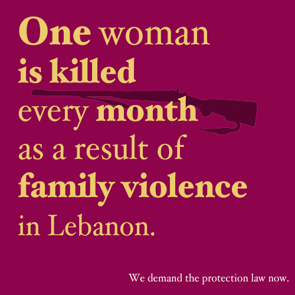

|
|

هر ماه در لبنان یک زن در جریان خشونتهای خانگی کشته می شود
پنج شنبه11 اسفند 1390
تغییر برای برابری: این رقم، تکان دهنده ولی درست است. در فاصله ماه می سال 2010 تا می 2011 ، به طور متوسط یک زن در هر ماه بر اثر خشونتهای خانگی در لبنان کشته شده است.این ها قتل هایی هستند که به ندرت در بین خطوط خبر در روزنامه ها به این صورت گزارش می شوند: الف.ب همسر س.ب را در شهری در لبنان به قتل رساند. این اسامی تنها در صورتی به دست می آیند که جستجوگر آن باشیم و به ندرت از ماجرای کامل قتل خبری منتشر می شود. کفی (KAFA) اینگونه اخبار را به صورتی که در تصویر زیر مشاهده می کنید گزارش می کند.

حال تصور کنید که چندین مورد از این قتلها اساسا در روزنامه ها گزارش نمی شوند. این بدین معناست که تعداد زنانی که در طول یک ماه توسط اعضای خانواده خود به قتل می رسند احتمالا بیشتر از یک نفر است. این شکل از خشونت گسترده و سراسری، زن کشی خوانده می شود. Azza Charara Baydoun ، شصت و شش مورد زن کشی را بین سالهای 1999 تا 2007 مورد بررسی قرار داد که سالانه 8 مورد را در بر می گرفت ولی شامل مواردی که تا سال 2007 پرونده شان هنوز به نتیجه نرسیده بود نمی شد و این بدین معناست که تعداد بیشتری از این پرونده ها در پیچ و خمهای سیستم قضایی لبنان گم شده اند.
زن کشی همیشه در دسته قتل های ناموسی طبقه بندی نمی شود. به عبارت دیگر این گونه قتلها همواره به بهانه حفظ آبروی خانواده ( مثلا در موارد زنا یا زنای محصنه یا موارد مشابه) رخ نمی دهند. زن کشی اغلب نتیجه شدت یافتن خشونتهایی است که به صورت گزارش نشده و مخفی باقی مانده اند و نهایتا به قتل منتهی شده اند. مادامی که در لبنان، هیچ مکانیسم حمایتی برای زنان وجود ندارد، خشونت علیه زنان به شکل گزارش نشده ادامه خواهد یافت و زنان مجبور به تحمل خشونت خواهند شد و در نتیجه آن به قتل خواهن رسید.
Diana Moukalled چند سال پیش یک فیلم بسیار زیبا بنام درباره لطیفه و دیگران ساخت و در این فیلم به جزئیات زندگی و وضعیت زنانی پرداخت که به دست شوهرانشان به قتل رسیده اند. او با خانواده های آنان، فرزندانشان و دوستانشان مصاحبه کرد وحقیقت این است که در تمامی موارد، خشونت به مدت چند سال ( قبل از وقوع قتل) به طور مداوم وجود داشته است و نهایتا لطیفه و بسیاری مانند او در جریان این خشونتها به قتل رسیده اند. ابراز پشیمانی خواهر او (لطیفه) بخاطر اینکه پیش از آنکه دیر شود اقدامی برای پادرمیانی یا مداخله برای توقف خشونت انجام نداده است، بسیار ناراحت کننده است.
ما باید هم اکنون اقدامی انجام دهیم تا برای یک عمربخاطر از دست رفتن زندگیهای بیشتری پشیمان نباشیم. به ما کمک کنید تا پیش نویس قانونی را مطرح کنیم که زنان را در برابر خشونت خانگی حفظ کند پیش از آنکه دیر شود. نمایندگانتان را در مجلس تحت فشار قرار دهید، با رسانه ها مصاحبه کنید، بصورت آنلاین و با استفاده از تکنولوژی اینترنت اطلاع رسانی کنید و سطح آگاهی مردم را بالا ببرید و در تظاهرات خیابانی روز جهانی زن به ما بپیوندید تا مردم را از این حقیقت آگاه کنید که خشونتهای خانگی منجر به قتل می شوند و ما سریعا به راهکارهای دولتی برای حمایت زنان در مقابل این خشونتها نیازمندیم.
راهپیمایی علیه تجاوز جنسی در بیروت
لبنان کشوری است که در آن هیچ یک از اشکال آزار جنسی و تجاوز جرم تلقی نمی شوند.
در ماه ژانویه سال 2012 ، زنان و مردان لبنانی تصمیم گرفتند که به خیابانها بیایند و از دولت بخواهند که قوانینی را وضع کند تا از زنان در مقابل خشونت حمایت کنند. خیابانهای بیروت را جمعیت مردمی پر کرده بود که فریاد می زدند و از دولت می خواستند تا قوانینی را وضع کند که زنان و مردان را در برابر آزار و تجاوز جنسی مورد حمایت قرار دهند.
دیدن زنان و مردان از گروهای سنی گوناگون که از نواحی مختلف لبنان آمده بودند و زیر باران درخیابان راهپیمایی می کردند و فریاد می زدند بسیار تاثیر گذار بود.
این شعار آنها بود: ما قوانینی میخواهیم که حمایتمان کنند.
مردم از اقشار مختلف و عقاید متفاوت در این راهپیمایی حضور داشتند، در جریان راهپیمایی دو مرد سالخورده با یک فعال اجتماعی (اکتیویست) درگیر شده و ادعا کردند که زنان به قوانین بیشتری نیاز ندارند، آنها وجود تجاوز جنسی در رابطه شرعی مثل ازدواج را انکار می کردند.
آنچه به معنای حقیقی تاثیر گذار بود مشاهده زنان، مردان و فمینیستهایی از سنین مختلف و از اقصی نقاط لبنان بود که پرچمهایشان را حمل می کردند و خواهان قوانین حمایتی بودند.
دیدن جمعیتی که در تمام مدت راهپیمایی با احساس سرود خواند و فریاد زد بسیار هیجان انگیز و حیرت آور بود.
در پایان این راهپیمایی اعتراضی، چند گروه معترض سد ارتش را شکستند. این صف نمی بایست توسط مردم شکسته می شد چرا که در پشت آن ساختمان مجلس لبنان قرار داشت. گروهی از فعالان مدنی (اکتیوست) از قسمت پشتی، صف پلیس را شکستند تا مجلس را آگاه سازند که معترضین نه محدود می شوند و نه سکوت می کنند.
این راهپیمایی در نوع خود یکی از باشکوه ترین، زیباترین و قوی ترین حرکتهای اعتراضی بود که می تواند بقیه جمعیت کشور را تحت تاثیر قرار دهد و دولت را از این حقیقت آگاه سازد که مردم کشور به حمایت و قوانین جدید نیاز دارند.
یک کنشگر برای ایجاد تغییرات باشید. به ما بپیوندید.